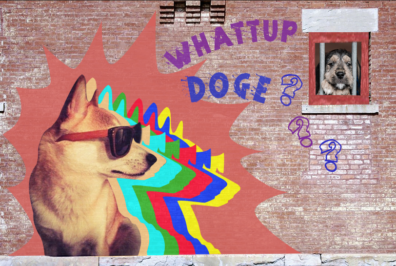
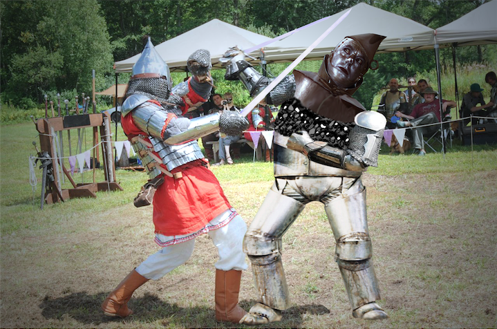
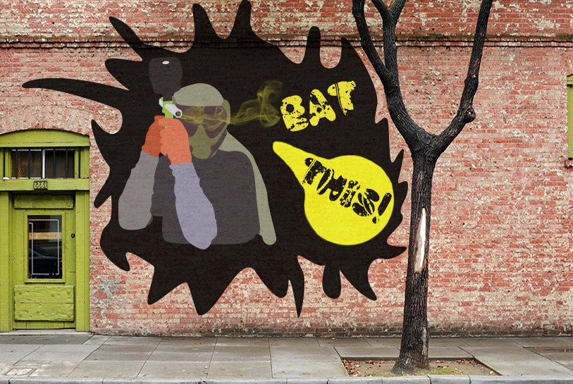
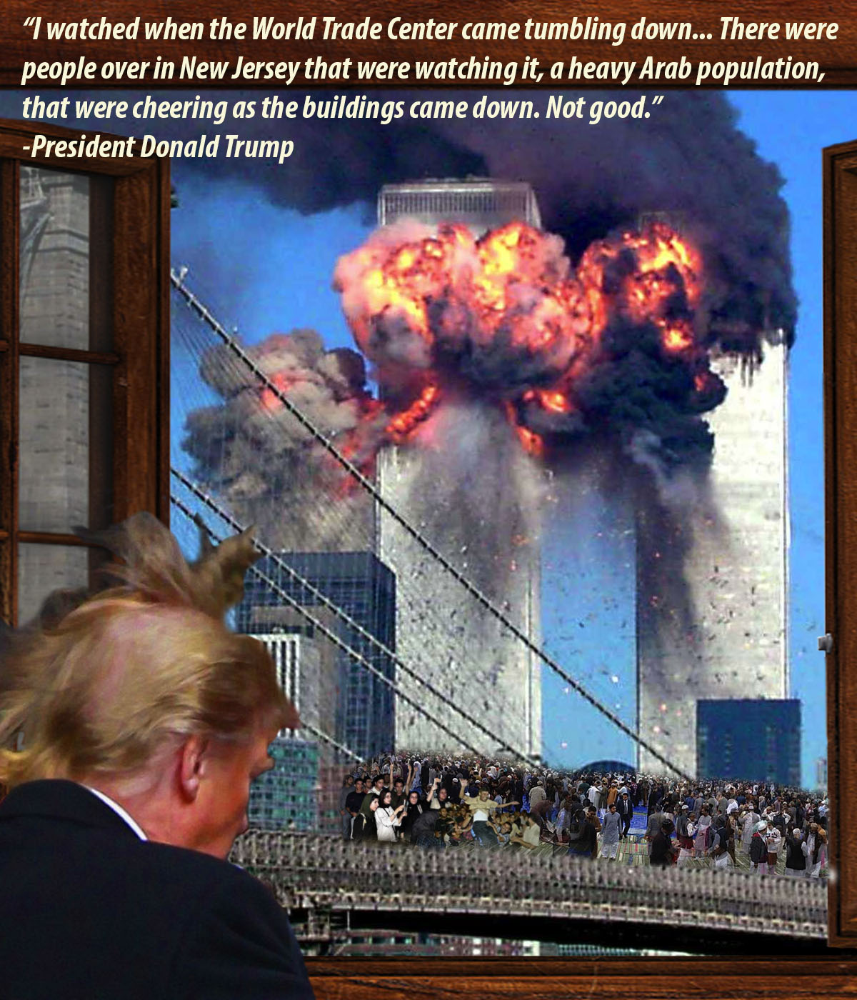
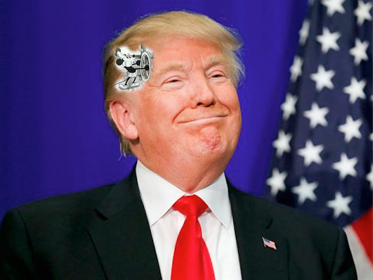
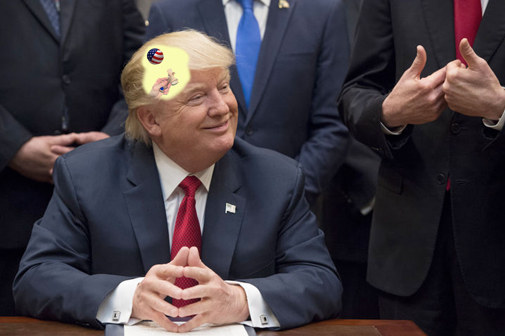
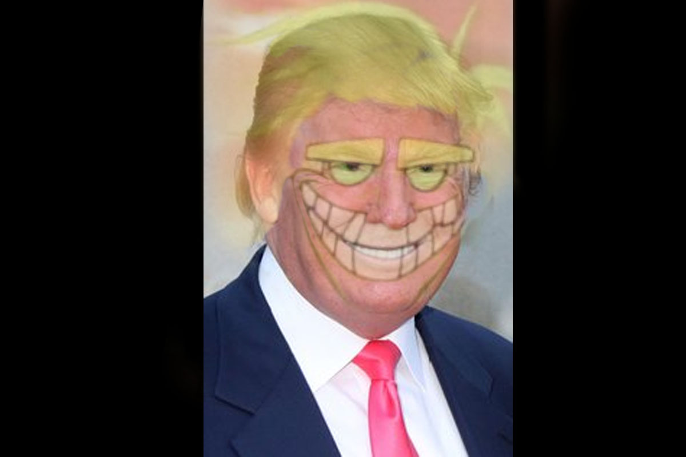

Erik's Portfolio
Welcome! I am Erik Finsand. My portfolio contains my various digital media works from when I first began up until now.
I present to you my projects about photo compositing, audio creation, film making, and 3D animation.
Photoshop

Grandmother's Memorial Poster - November 2014 - Photoshop
My mother asked me to make a memorial service poster for her recently passed mom. We needed a photo of grandmother with the golden family china cabinet, although, that photo didn't exist. This image is a picture of my aunt beside the family heirloom with my grandmother's face spliced over aunty's. This project was incredibly important for my mother. I considered this piece my first professional request, while the remainder of my work is for kicks.

Doge Swag - November 2014 - Photoshop

Tinman Clash - October 2014 - Photoshop

Paintball Pat - December 2014 - Photoshop
Trump Memes

Claims Behind a Madman - September 2017 - Photoshop

Nonchalant Trump - September 2017 - Photoshop

Inside the Mind of the President - September 2017 - Photoshop

Freaky Trump - September 2017 - Photoshop
Audio
Waking up to Consciousness - October 2017 - Audition / Premiere Pro
Tony Jaa Super Saiyan - October 2017 - TextEdit / Audacity / Photoshop / Premiere Pro
Film
Jordan McPoop - April 2014 - Premiere Pro
Get A Grip - June 2014 - Premiere Pro
Chapter 1: Meeting - December 2013 - Premiere Pro
Animation
Tower of Hanoi - 2012 - Maya
Gotenks 3D Fusion - 2015 - Maya
Zombie - 2015 - Maya
Warning: Lower volume by two.
Non computer projects showing soon
More About Me